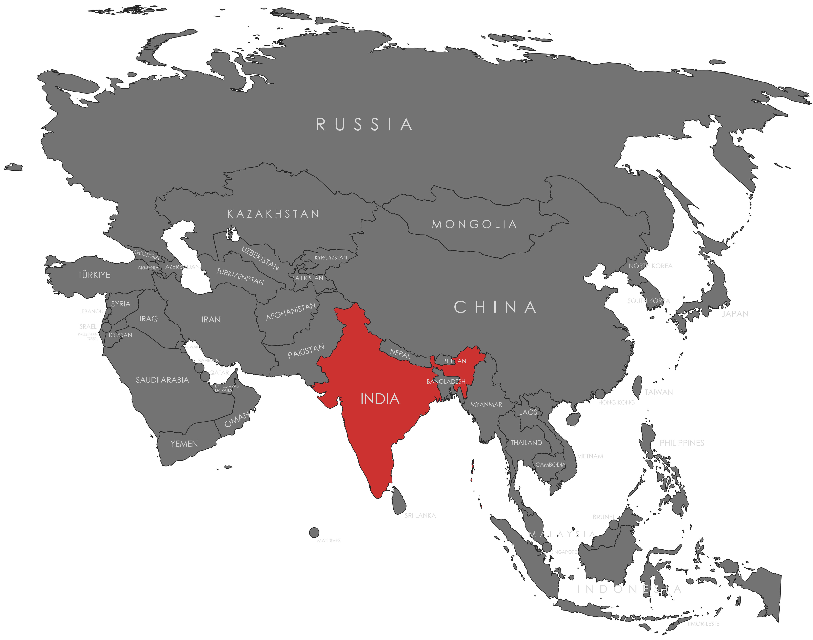

Specifications
- Local Name: भारत (Bhārat)
- Proportion: 2:3
- Name of the Flag: Tiranga (The Tricolour)
- Adopted: July 22, 1947
Symbolism
- Saffron: Courage, sacrifice, national spirit
- White: Truth, peace, and purity
- Green: Growth, faith, and prosperity
- Ashoka Chakra (24-spoke wheel): Eternal progress, law, justice, movement of life
Colors:
Shapes / Symbols:
Meaning / Special Display
- The Ashoka Chakra represents continuous movement and moral righteousness.
- The flag is displayed horizontally only, and never allowed to touch the ground.
Description
- The flag expresses India’s identity as a nation rooted in justice, peace, courage, and growth.
- For its citizens, it symbolizes unity in diversity and commitment to national values and progress.

Return to Gallery